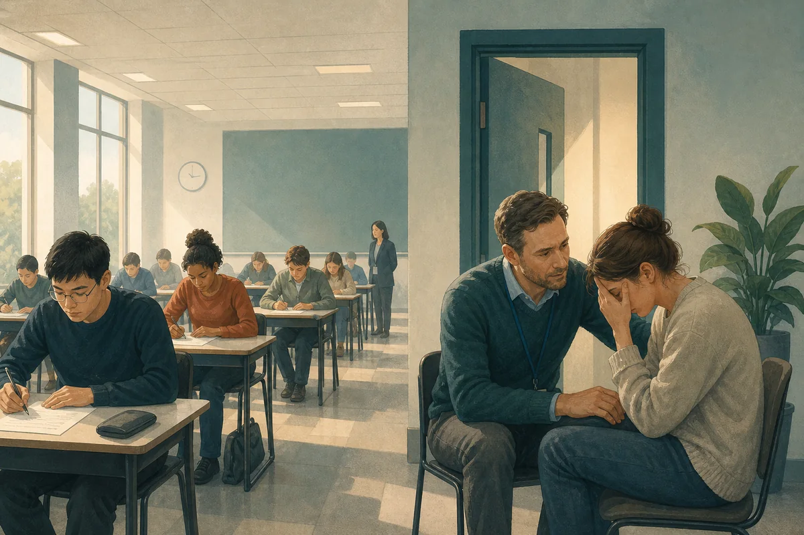
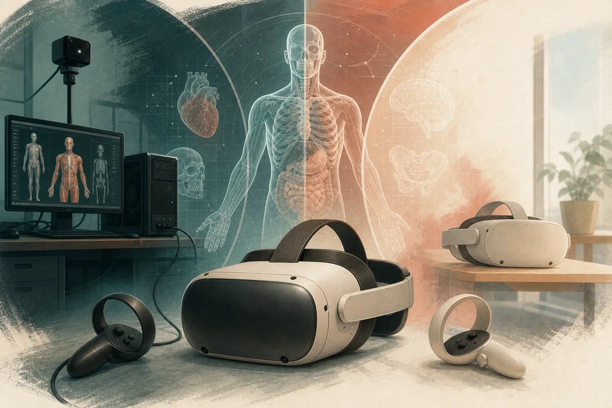
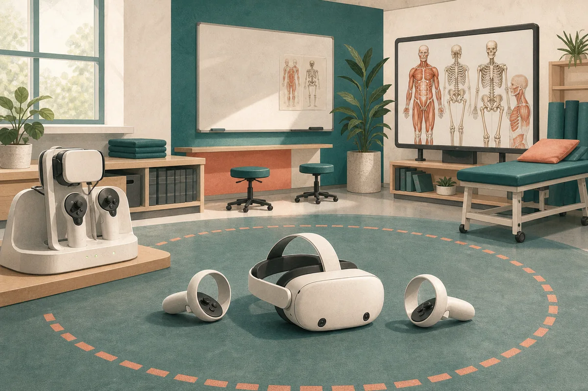
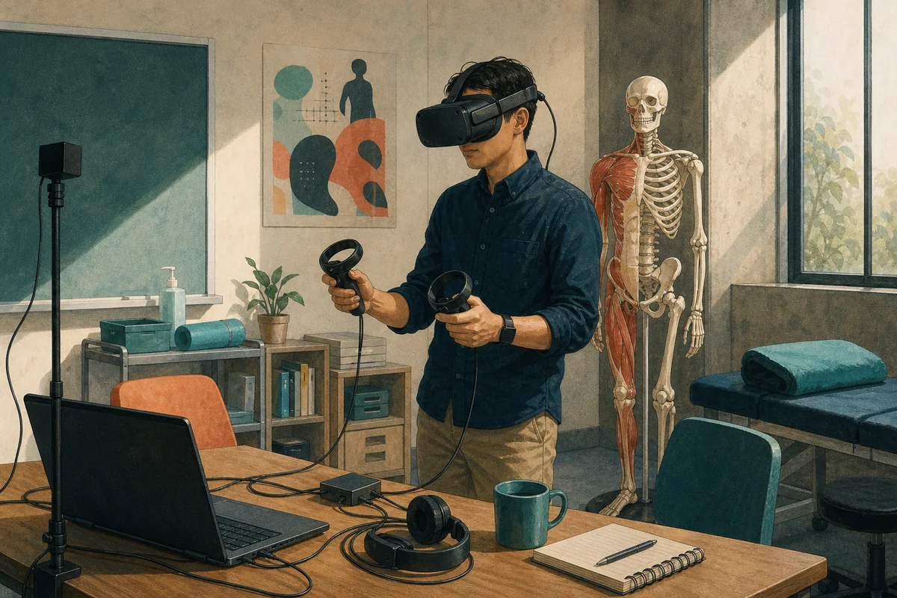
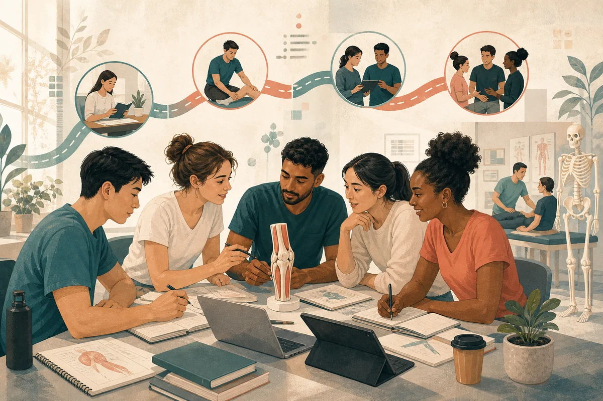

重点领域
从三个方向浏览作品集
最新文章
当前思考
学术写作
健康专业教育
关于人工智能、虚拟现实、教学、学习设计、评估、学生支持及学术工作的文章。
2026年3月28日
超越聊天机器人：我如何运用 OpenClaw 重拾学术生活 - “隐形课程”的负担
探讨自主式人工智能如何减轻大学教师的行政负担，让时间重新聚焦于教学、指导与研究。
2026年3月28日
教与学会议反思
从教与学会议出发，反思人工智能发展对高等教育实践的影响。
2024年5月7日
考试期间应对学生心理健康危机：教师指南
为教师提供在考试期间识别并应对学生心理健康危机的实用指南。
2023年10月27日
迎接无线 VR 的未来：Meta VR 头戴设备设置指南
介绍无线 VR 的设置流程，以及其对教学与学习的潜在价值。
2023年9月30日
VR 设置：我的看法
以实际设备经验反思 VR 技术的优势、限制与教育应用。
2020年5月21日
博士研究之路
反思博士研究历程中的挑战、指导关系与持续学习。
反思写作
专业反思与实践札记
通过对专业转变、博士研究、招生、工作效能与科技实践的反思，让学术工作保持踏实。
完整作品集
所有文章
12 篇精选文章，涵盖教学、教育科技、学生支持与学术实践。
超越聊天机器人：我如何运用 OpenClaw 重拾学术生活 - “隐形课程”的负担
健康专业教育
教与学会议反思
健康专业教育
两场毕业典礼：从南非到香港
专业反思
决策的重量：担任大学招生面试官的经验
专业反思

支持有特殊教育需求的学生：教师指南
专业反思

考试期间应对学生心理健康危机：教师指南
健康专业教育

探索虚拟世界：HTC VIVE、Meta Quest 2、Quest 3 与 Quest Pro 比较
专业反思

迎接无线 VR 的未来：Meta VR 头戴设备设置指南
健康专业教育

VR 设置：我的看法
健康专业教育

以 3D Organon 探索虚拟现实
专业反思

成功需要什么？
专业反思
博士研究之路
健康专业教育